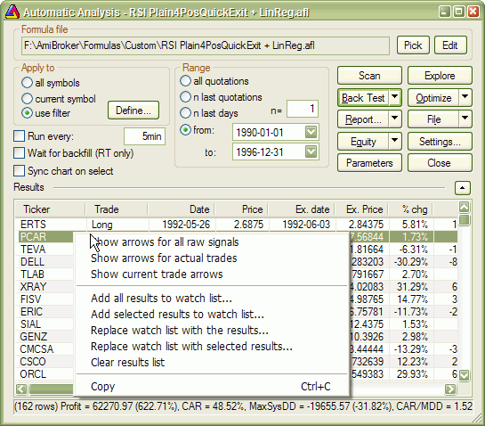

Automatic Analysis result list context menu

This menu appears when you right-click on the Automatic Analysis result list.
Available choices:
- Show arrows for all raw signals - shows buy/sell/short/cover arrows for
all raw (unfiltered) signals. If your formula is, for example,
buy = C > MA( C, 10 );
you will get a buy (solid green)
arrow for all bars where the close was above the 10-bar moving average
- Show arrows for actual trades - shows arrows only on trade entry/exit
bars. This shows arrows for ALL TRADES. If your formula is, for example,
buy = C > MA( C, 10 );
you will get a buy (solid green) arrow only for the very first bar when the close
crossed above the moving average and a trade was initiated, and you won't get any subsequent
buy arrows until a matching sell (trade exit) occurs.
Note that trade arrows represent all possible trades taken. A given trade may not
be taken by the backtester if there are insufficient funds to enter it.
- Show current trade arrows - shows entry/exit arrows for selected trade only.
This displays the arrows for currently selected trade (from the result list).
It represents the trade actually taken.
- Add all results to watchlist - adds all symbols from the result list
to the watchlist of your choice. More on this here
- Add selected results to watchlist - adds symbols from selected rows to
the watchlist of your choice. More on this here
- Replace watchlist with all results - empties the watchlist and then
adds all symbols from the result list to the watchlist of your choice. More
on
this here
- Replace watchlist with selected results - empties the watchlist and
then adds symbols from selected rows to the watchlist of your choice. More
on this here
- Clear result list - removes all rows from the result list.
- Copy - copies the result list to the Windows clipboard, so you can paste it
to some other application, like Excel, for example.
IMPORTANT NOTES:
1. A buy arrow is solid green, a sell arrow is solid red, a short arrow is hollow
red, and a cover arrow is hollow green
2. Arrows are shown only on charts
that have the "Show arrows" property turned ON.